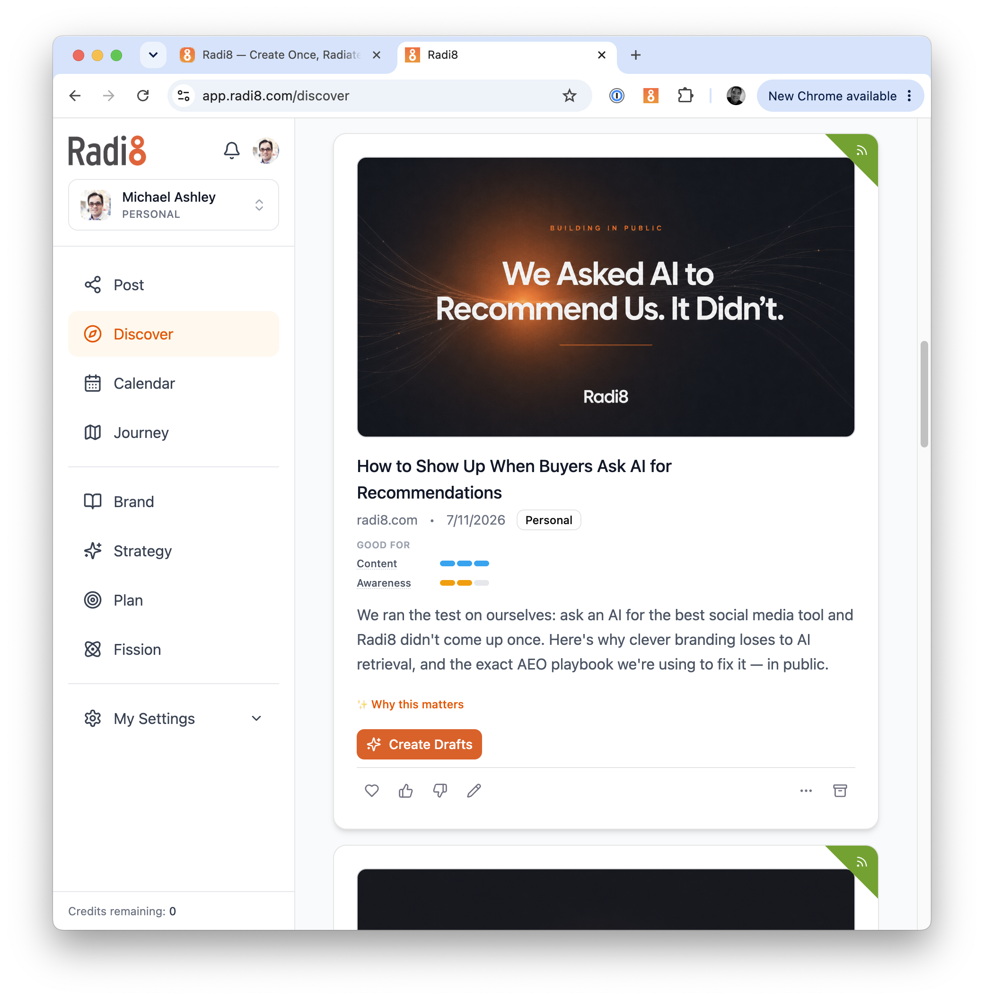

Someone is asking about you
right now.
A 30-minute idea for founders
Be the Answer
Why listen to me
Mash · Michael Ashley
FastPencil (built & sold) · advisor in 3 exits · professor · founder of Radi8
mashley.com · inspiringfounders.com · radi8.com · linkedin.com/in/mashley
What marketing is really for
Not pretty pictures.
Real people, becoming customers.
~43% of startups fail from poor product–market fit — the #1 root cause,
ahead of anything tactical. CB Insights · startup post-mortems
You can't be the answer
if you don't know the question.
Go slow — to go fast.
The map: your customer's journey
Awareness→
Acquisition→
Adoption→
Advocacy
Four stages. Each one a different question —
and a different place you capture value.
The customer's journey · stage 1 of 4
Awareness
"Does a solution like this
even exist?"
Your content's job: be seen — name the problem you solve.
Value captured → you exist to them
The customer's journey · stage 2 of 4
Acquisition
"Why should I
choose you?"
Your content's job: help them decide — honestly.
Value captured → they choose you
The customer's journey · stage 3 of 4
Adoption
"How do I get the most
out of this?"
Your content's job: help them actually succeed.
Value captured → they stay
The customer's journey · stage 4 of 4
Advocacy
"How do I
tell others?"
Your content's job: make sharing easy.
Value captured → they bring the next customer
Different stage.
Different question.
Different answer.
Being found has changed
Be the answer the AI gives.

Gartner projects a 25% drop in traditional search volume by 2026 as people
shift to AI answers. Gartner, 2024
Does AI even know
you exist?
How one person does all of this
AI without context
makes junk, faster.
Use AI to lower the cost
to get a customer —
and raise the value of each one.
One thing to do tonight
Open ChatGPT. Ask the question
your customer would ask.
"Who's the best company for [their problem]?"
Not the answer? The repo shows you the fix →
Be the Answer
Everything today — free. Scan it:
github.com/mashley/be-the-answer